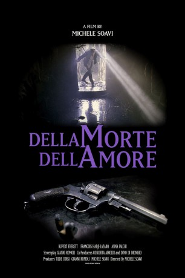
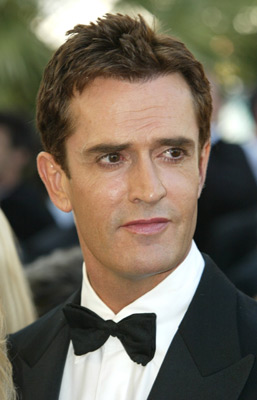
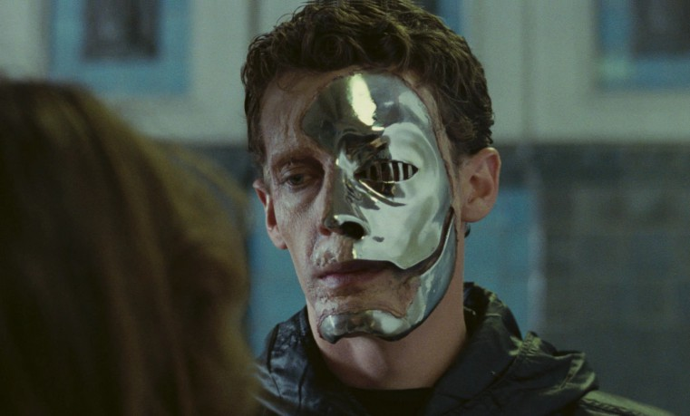

#11858 Dellamorte Dellamore
Alternativ: Cemetery Man (Englischer Titel)
 
 IMDB-Wertung: 7.2 / 10
IMDB-Wertung: 7.2 / 10  Metascore: 0
Metascore: 0 
Francesco Dellamorte ist Totengräber im italienischen Provinzkaff Buffalore. Zusammen mit dem total verblödeten Gnaghi verbuddelt er hier reihenweise Leichen, um sie dann wenige Tage später erneut zu erschiessen. Denn über dem Friedhof von Buffalore liegt ein Fluch, der die Toten innerhalb von sieben Tagen nach ihrer Bestattung zurückkehren lässt. Eigentlich nimmt Francesco die Sache sehr gelassen hin, doch als dann seine Geliebte als Untote zurückkehrt und er gezwungen ist, sie zu erschießen, verliert er die Orientierung...
Jahr: 1994
Dauer: 103 Minuten
FSK: 18
Land: Italien Studio: Astro DistributionTonspuren: DD5.1 - ,
Untertitel:
Auflösung: 1080p (1920x1080) Größe: 6594 MB
Genre: Horror, Komödie
Regisseur: Michele Soavi
Drehbuch: Tiziano Sclavi, Gianni Romoli
Soundtrack: Riccardo Biseo, Manuel De Sica
Darsteller:
-  Rupert Everett als Francesco Dellamorte
- François Hadji-Lazaro als Gnaghi
- Anna Falchi als She
- Mickey Knox als Marshall Straniero
- Fabiana Formica als Valentina Scanarotti
- Clive Riche als Doctor Verseci
- Barbara Cupisti als Magda
- Anton Alexander als Franco
- Maddalena Ischiale als Franco's Nurse
-  Michele Soavi als Man in City Square (uncredited)
- Katja Anton als Claudio's Girlfriend
- Pietro Genuardi als New Mayor Civardi
- Patrizia Punzo als Claudio's Mother
- Stefano Masciarelli als Mayor Scanarotti
- Vito Passeri als 1st Returner
- Alessandro Zamattio als Claudio
- Renato Donis als She's Husband
- Claudia Lawrence als Miss Chiaromondo
- Francesca Gamba als Hospital Nurse
- Elio Cesari als Monk
- Maurizio Romoli als Hospital Doctor
- Elena Fresco als Hospital Sister
- Marijn Koopman als
- Andrea De Sica als Young zombie (uncredited)
Datei: X:\FSK18-1900-1999\Dellamorte Dellamore (1994, FSK18, 1920x1080).mkv seit 02.10.2019
Festplatte: FSK18
 Es gibt insgesamt 108 Filme in der Gruppe 'FSK18-1900-1999'
Es gibt insgesamt 108 Filme in der Gruppe 'FSK18-1900-1999'